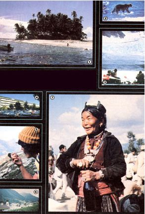

Travel teaches . . . and on MOTHER's worldwide trips, you'll love the lessons!
Photo 1 Courtesy of Air New Zealand: 2 And 3 Courtesy of Sobek Expeditions, Inc. 4 Courtesy of Jordan Collage : 5 And 6 By Frank Schell 7 By Will Weber
Since our first excursion (which was a study of health and nutrition in the U.S.S.R., held in May 1979), MOTHER's exciting "tours that teach" have offered readers the chance to study wildlife in Kenya, crafts and cultures in the Andes and the Upper Amazon, outdoor photography in the American Southwest, solar developments in Israel, food production in the People's Republic of China, alcohol fuel in South America, crafts in Scandinavia, and environmental sanctuaries in Sri Lanka.
Furthermore, it's our aim to see that each new trip is the best yet. So, if you missed out on our past expeditions, you'll be glad to know that-during the coming months-we'll open up even more avenues to adventure, knowledge, and new friends . . . on the following carefully selected excursions.
SOLAR POWER IN ENGLAND AND FRANCE
Next on our travel agenda (from August 22 to 30, 1981) is a visit to the International Solar Energy Congress and Exhibition in Brighton, England . . . as part of a tour that will also include sightseeing in London and Oxford and attending a Shakespearean play at Stratford-on-Avon.
Following that portion of the adventure, this tour-which we're cosponsoring with Jordan College and Solar Age magazine-will move on to France . . . a land that's long been a leader in solar research and technology. (The French half of this trip will run from August 29 to September 6.) We'll start in Paris, then plunge deep into the Pyrenees, and end our journey in the Mediterranean resort of Monte Carlo . . . learning from solar energy experts and visiting examples of "state of the art" sun-power technology as we go.
And perhaps the best news of all is that we've been able to drop the cost of the two-part expedition . . . by a full $100! The new prices (including round-trip airfare from New York and all other costs except for lunches and dinners) will be $1,499 per person for the tour of England or France, and only $2,480 per person to visit both countries. However, because of the shortage of time before the excursion gets under way, would-be participants should call MOTHER's tour director-at 704/693-0211-today . . . to see whether space is still available.
LEARNING IN PARADISE
The wisdom of Anne and Paul Ehrlich has graced the pages of this magazine since issue 50. And during our South Seas Seminar (which will run from November 27 through December 11, 1981), a group of lucky readers will have the opportunity to meet and learn from our Ecoscience columnists-and from their friends and colleagues John and Cheryl Holdren-amidst the tropical beauty of Tahiti, Bora Bora, and Raïatéa.
Mornings in the Polynesian paradise will be spent studying reef fishes in some of the world's most colorful coral gardens. Later, evening lectures will relate the experiences of the day to the world's vast ecological scheme (afternoons will be left open to give our tourists time to relax and explore). Don't wait any longer to send your $100 deposit for one of the few places that remain available on this popular trip. The full cost is $2,295, which includes airfare from Los Angeles, land costs, and most meals.
A CARIBBEAN "ENERGY CRUISE"
Most folks who've been on an ocean cruise will vouch for the fact that a seagoing adventure is "good for what ails you" (and who can't conjure up an ache or two during a cold December?). So, when Jordan College asked us to join in sponsoring an alternative energy cruise in the Caribbean-from December 5 to 12, 1981-at $745 per person, we hopped right on board!
After visiting some solar projects in Puerto Rico, we'll travel aboard the M/S World Renaissance to the islands of Saint Lucia, Guadeloupe, Antigua, and Saint Thomas . . . and take a side trip to a group of solar installations on Barbados. Between ports of call, lectures will be offered by experts in the field of alternative energy.
A $200 deposit is all that's needed to reserve your sunny week away from winter, and special reduced fly/cruise airfares will be offered from many major U.S. cities. (The round trip from Chicago to San Juan, for example, will cost only $300.)
REMOTE AND REMARKABLE
Few "outsiders" have visited Nepal's deep and rugged Arun Valley: an isolated haven for wildlife set between the towering peaks of Everest and Kanchenjunga, the first and third highest mountains on earth. Despite its varied population of Brahmins, Tibetans, Newars, Limbus, Rais, Chhetris, Sherpas, and Tamangs (we'll visit some of these native peoples' semitropical, self-sufficient farms and villages at lower elevations), the area is very wild.
For much of the three-week trip (from January 25 to February 17, 1982), our group will leave civilization behind and follow a long-abandoned Tibetan trade route up through thick forests containing over 30 species of flowering rhododendron that grow up to 60 feet tall. It's in this rugged region that the legendary yeti and the rare snow leopard have reportedly been sighted.
The Nepal tour will not be an easy trek, and only physically and mentally fit individuals who are over 18 years of age should sign up. Camping and hiking experience is also necessary, although our Sherpa porters and cook will allow us to get by with smaller individual loads than would normally be possible in unassisted backpacking.
This trip (it's being coordinated by Journeys, an environmental tour operator) requires a $300 deposit and is al ready half full. The estimated price of $2,785 will cover everything but a couple of meals in exotic Kathmandu.
A SUMMER WALK IN THE ALPS
There are few places on earth as beautiful as the Swiss and Austrian Alps in the summertime, andfrom June 11 to 26, 1982-we'll camp out in this "sound of music" environment (occasionally overnighting in mountain huts or quaint local pensions) while we explore the steep trails near Salzburg, Kitzbuhel, Innsbruck, Liechtenstein, Zurich, and Lake Geneva . . . and learn about the edible wild plants and herbs that grow there.
The first stop on this tour, however, will be Amsterdam, because-only once every ten years-a spectacular flower show is held in Holland, and we'll have a chance to attend the famous event before beginning the Alpine sojourn.
Our associates at Globe Treks-who are coordinating this tour-are currently in Europe making final arrangements. When they return, we'll be able to send you a detailed itinerary. At this point it appears that airfare, all camping equipment, lodging, land transportation, and two meals a day will cost around $2,000 . . . and a $200 deposit is required.
A PRISTINE ALASKA
Ever since Mother's Tours became a reality, we've been searching for the per fect Alaska trip-one that offers wildlife, scenery, and a pristine wilderness experience-and here it is!
We've chosen August 15, 1982 as the (still tentative) date to meet in Haines, Alaska . . . before making our way to the Tatshenshini River, which springs from Canada's Yukon, runs southwest through British Columbia, and empties into Alaska's Dry Bay. Along its route, the river slashes through the rugged Saint Elias Range . . . an almost unbroken chain of 8,000-foot (and higher) summits between which we'll wend our way on rafts.
However, the most fantastic features of the Tatshenshini tour are the glaciers. Few other places exist where one can drift (in safety) past the groaning, creep ing, neon-blue rivers of ice and watch as hotel-sized chunks break off into the water. Add to this sight scores of waterfalls several hundred feet high, a concentration of wildlife that includes everything from the grizzly to the biggest population of bald eagles in the world, and the brilliant beauty of the flashing aurora borealis . . . and we think you'll find the show to be well worth the all-inclusive price of $1,490 (Haines to Haines). As a bonus, the people from Sobek Expeditions, Inc.-who'll be handling the logistics of this trip for MOM-not only are first-class riverrunners, but are said to be among the best wilderness cooks anywhere!
Send a $250 deposit for this 11-day adventure . . . or write to Mother's Tours (P.O. Box 70, Hendersonville, North Carolina 28791) for more information on this and/or our other trips.
|
 [1] Sun-drenched Tahitian beaches. [2] Alaska has abundant wildlife . . . [3] and majestic glacial rivers. [4] Solar rooftop panels heat a French hospital. [5] The Alpine summer is cool . . . [6] and the scenery lovely. [7] A hospitable Sherpa. |
|
|